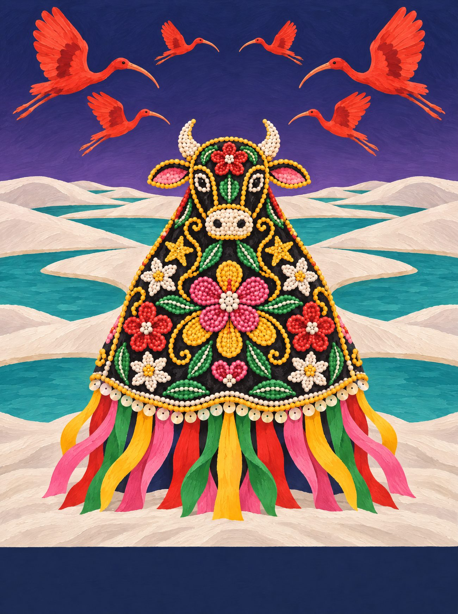
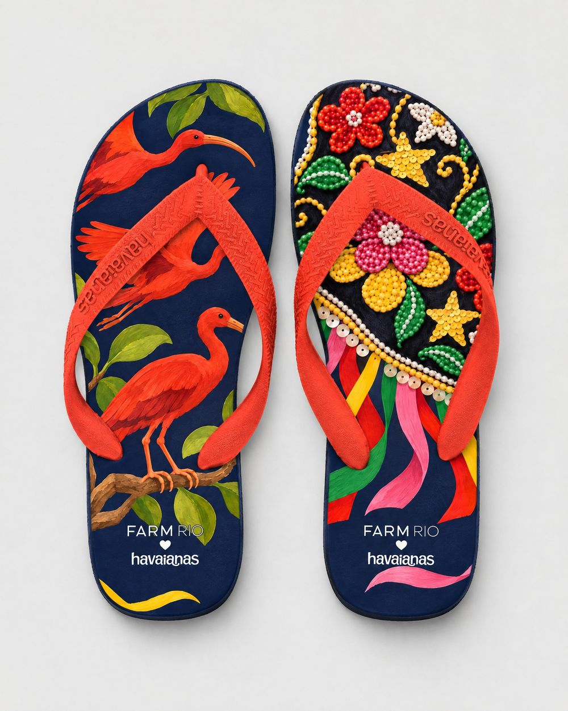
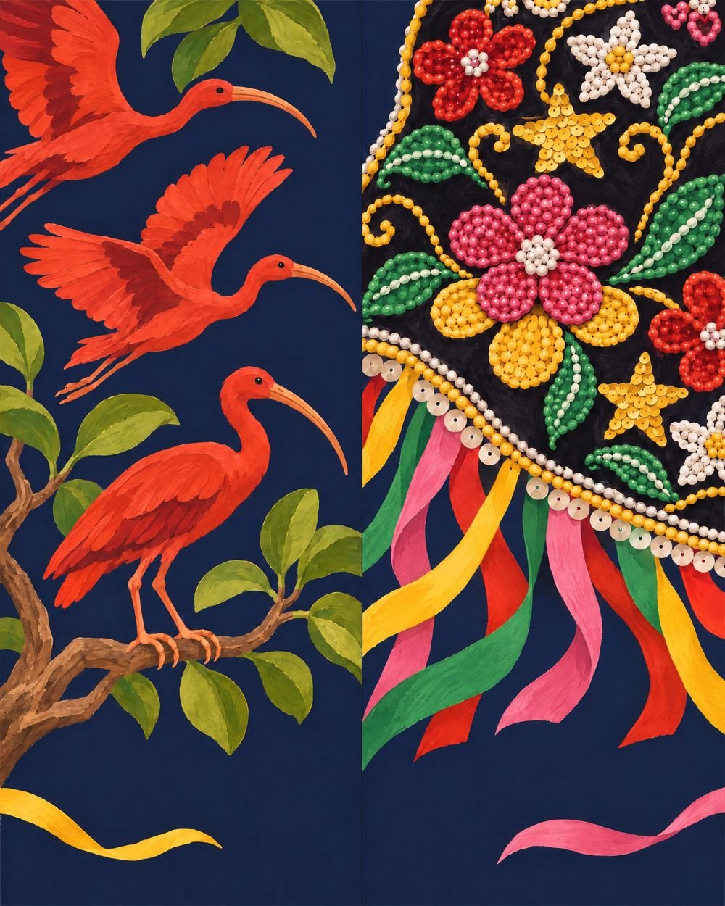
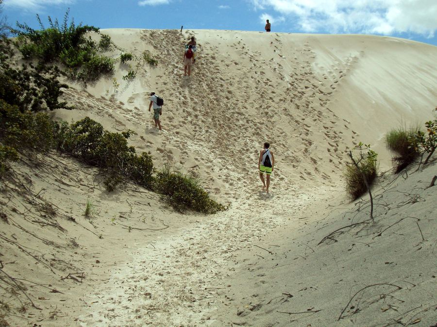
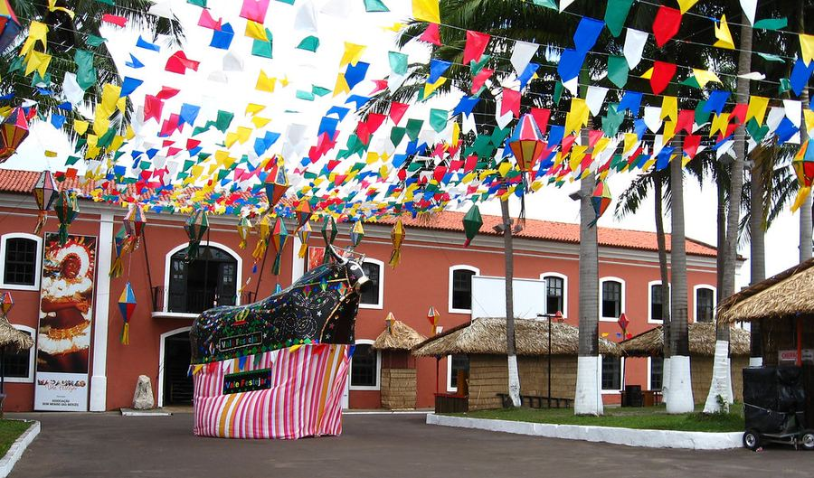
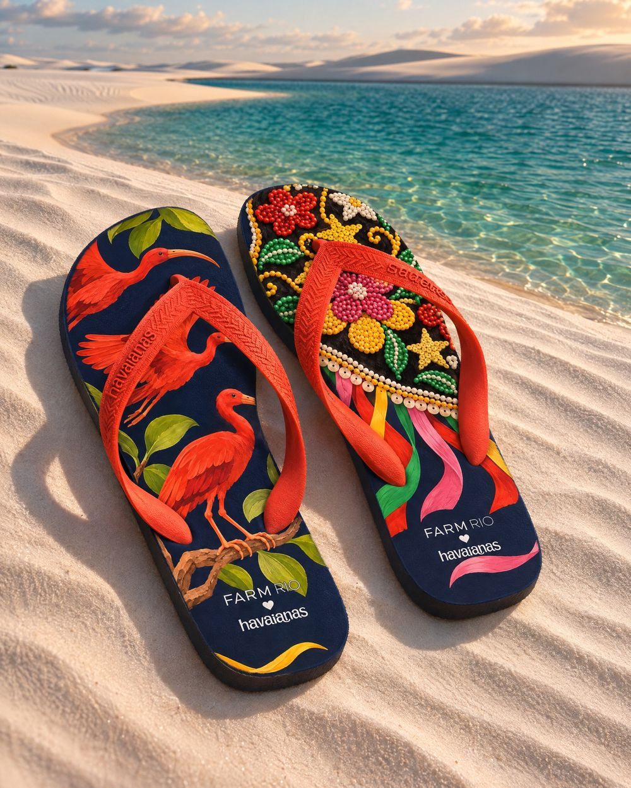
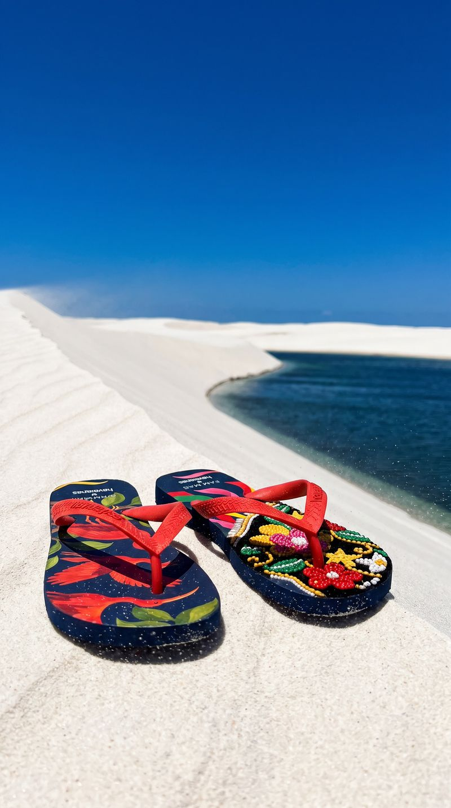
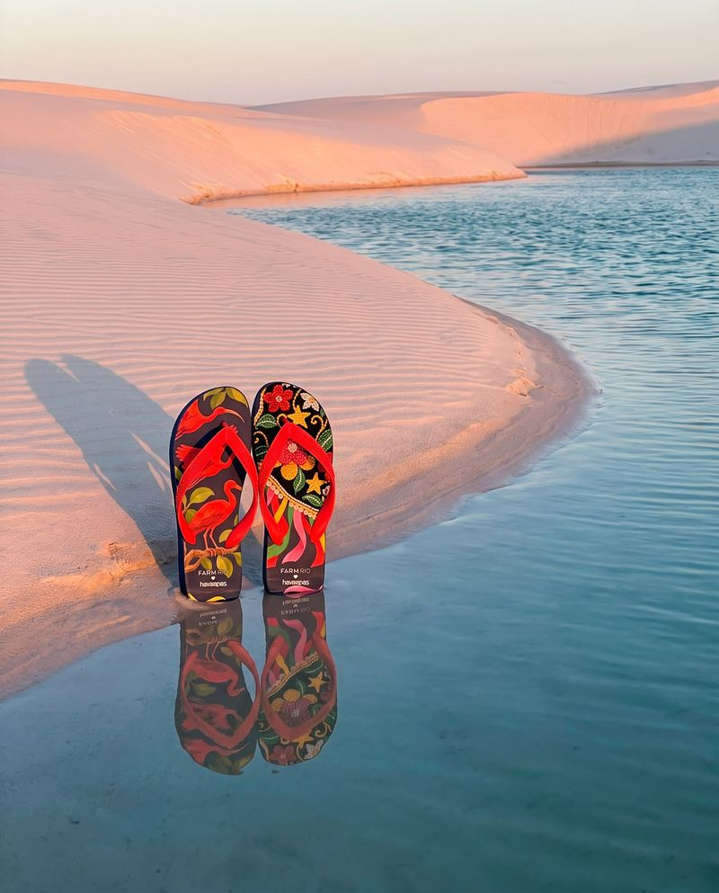
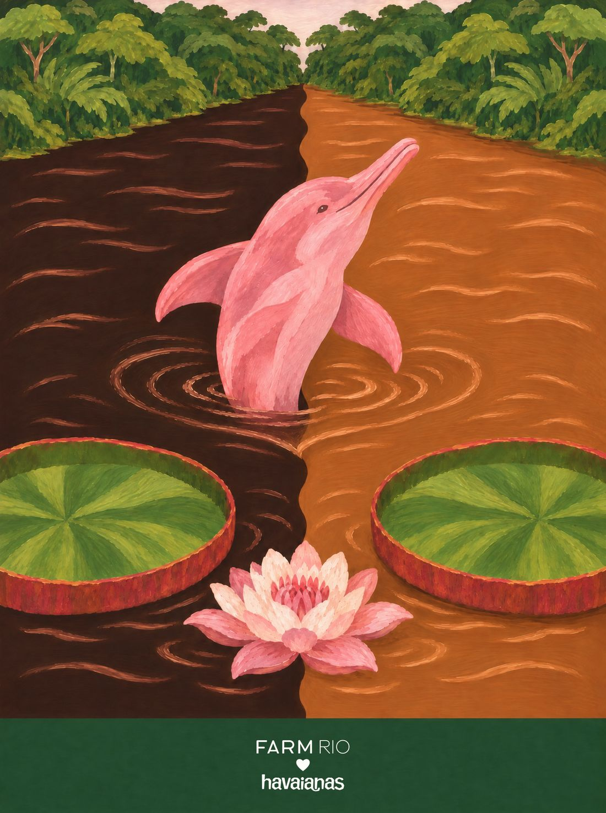

Maranhão
Couro de Boi
As noites de São João em São Luís, quando o boi chega bordado em veludo preto, e os guarás vermelhos que pintam o litoral do Maranhão.
O bordado do boi é feito por bordadeiras, e cada couro tem autoria. Aqui o bordado foi criado para a coleção, inspirado na técnica, sem copiar nenhum boi. O Bumba-meu-boi é patrimônio da humanidade.
06 / 14 · Nordeste

o coração
Encontre o coração
Ele não está desenhado em cima de nada. Aparece quando os próprios elementos da cena se encontram. Procure na ilustração e toque nele.
♥ uma florzinha de miçanga no bordado do boi


o par
Dois pés, uma história
na palmilha
pé esquerdo com guarás voando e um pousado no galho de mangue; pé direito com um pedaço do couro de veludo bordado, flores e estrelas de miçanga e fitas coloridas.
borracha e tira
azul-noite de São João; tira vermelho-guará.
a arte da palmilha
Em díptico

caderno de campo
São Luís é a cidade dos azulejos: casarões do centro histórico vestem fachadas inteiras de azulejo português azul e branco, que espanta o calor. Em junho, a ilha inteira vira terreiro: o boi chega bordado em veludo preto, coberto de miçanga, canutilho e lantejoula, girando ao som das matracas e dos pandeirões. No mangue, o guará pinta tudo de vermelho; e em Barreirinhas, os Lençóis são dunas brancas com lagoas de água doce no meio.
trilha · toada de bumba-meu-boi de matraca · tambor de crioula · reggae nas radiolas de São Luís
A âncora: o couro bordado do bumba-meu-boi do Maranhão: veludo preto coberto de miçanga, canutilho e lantejoula.
pesquisa de campo
Na rua, antes do desenho




campanha
O par no lugar


fotos de campo deste estado

← Ceará